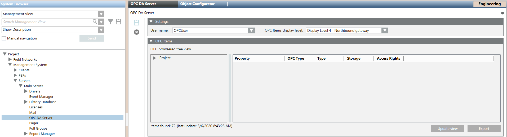

OPC DA Server Workspace
The default project that comes with the installation does not contain the Desigo CC OPC DA server. In order to support the OPC connectivity, you must add and configure the OPC DA server object. For instructions, see Configure the OPC DA Server.

Settings of the OPC DA Server
Once you add the OPC DA Server object, in the Settings expander, the following settings are available:
- OPC software user account
- OPC items display level
OPC items display level | Description |
DL0-Configuration | The Desigo CC OPC DA server will expose any OPC items whose properties have DL0 set (properties visible in System Manager in Engineering mode). |
DL1-Main Operation | The Desigo CC OPC DA server will expose any OPC items whose properties have DL1 set (properties visible in the Status and Commands window available for graphic objects). |
DL2-Standard Operation | The Desigo CC OPC DA server will expose any OPC items whose properties have DL2 set (properties visible in the Operation tab in the Contextual pane). |
DL3-Extended Operation | The Desigo CC OPC DA server will expose any OPC items whose properties have DL3 set (properties visible in the Extended Operation tab in the Contextual pane). |
DL4-Northbound Gateway | The Desigo CC OPC DA server will expose any OPC items whose properties have DL4 set (properties that have any relevance for the OPC server interface and other northbound interfaces in future that will make use of this setting). |
For instructions, see Start the OPC DA Server.
OPC Items (OPC DA Server Data)
Once you configure the OPC DA server, in the OPC Item expander, you must click Update view to the latest OPC DA server project data:
- The Desigo CC OPC DA server tree view on the left will display an OPC-filtered tree view made up only of the data points under Management View and Application View that are included in the OPC scope and retrieved as latest loaded configuration.
- The Items found number displayed at the bottom of the OPC-filtered tree view, indicates the number of OPC items found in the current project configuration. They include all the properties exposed by the Desigo CC OPC DA server and corresponding to the data points in Management View and Application View that are included in the OPC scope.
If you expand an OPC group in the OPC-filtered tree view, the relevant OPC items display. If you select an OPC item, the grid on the right displays its details:
- Property (for example, Summary Status)
- OPC Type (for example, VT_UI4)
For more details, see OPC Items Format. - Type (for example, GmsEnum)
- Storage (for example, Simple)
- Access Rights (for example, RW; READABLE/WRITABLE)
You can handle the current configuration (the last loaded) of the Desigo CC OPC DA server as follows:
- Click Update view and refresh the OPC DA server data with the latest project data (that is, update in the OPC Items expander the display of the OPC-filtered tree view and its OPC items).
- Click Export and export the Desigo CC OPC DA server current configuration to a CSV file.
In the Operation tab, you can also check the status of the Desigo CC OPC DA server and stop and restart to align project data and OPC DA server data (see OPC DA Server Commands).
If Desigo CC OPC DA server is no longer required, you can remove its node (click  ) from System Browser.
) from System Browser.

If you want to check the data exposed to third-party OPC clients, use a free OPC Test Client (for example, MatriconOPC Explorer, or Iconics).
OPC Items Data Alignment
In the OPC Items expander of the OPC DA Server tab, the OPC-filtered tree view, OPC items data, and the number of Items found do not automatically update because of configuration changes. You must refresh the OPC Items expander display to obtain the latest project configuration data (OPC-filtered tree view, properties, and number of items found). See Retrieving the OPC DA Server Configuration Data.
Refreshing the OPC Items expander display has no effect on the Server Items Number property that displays in the Operation tab. This number indicates the OPC items loaded in the system when the OPC DA server starts and does not automatically update if the configuration changes; it updates only any time the server is started.
You can check any misalignment between project data and OPC DA server data by comparing the Items found number located bottom-left of the OPC Items expander to the Server Items Number property located in the Operation tab (see OPC DA Server Commands).
Assuming a change in the project configuration (for example, some OPC items are removed or added), the number of OPC items displayed may not correspond to the number of OPC items configured in the project. To view the latest current project configuration, refresh the OPC Items expander display and the number of Items found updates accordingly. As the Server Items Number does not update consequently, you will notice a mismatch between the Items found number in the OPC Items expander and the Server Items Number in the Operation tab. To align data (that is, to allow the OPC DA server to correctly read the number of OPC items or to update their scaled units if changed), you must stop the Desigo CC OPC DA server (see Stopping the OPC DA Server). The first time any third-party OPC clients connect to the Desigo CC OPC DA server, it starts again and data appears updated: the number of Items found will be the same as the Server Items Number (see Start the OPC DA Server).